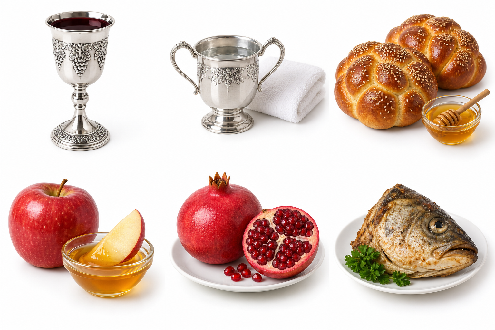

מדריך 1 • שני הלילות רגילים • טיוטה לבדיקה
סדר ברור בבית: מדליקים נרות, מקדשים, אוכלים ומברכים.
| מתי? | מה עושים? | העמוד |
|---|---|---|
| הערב הראשון | נרות וקידוש הלילה, לפני סעודת החג | 2 |
| היום הראשון | קידוש לבוקר, לפני סעודת היום | 3 או 4, לפי הנוסח |
| הערב השני | נרות, קידוש הלילה ופרי חדש | 5, ונוסח הקידוש בעמ׳ 2 |
| היום השני | שוב קידוש לבוקר, לפני סעודת היום | 3 או 4, לפי הנוסח |
לא מקדשים בכל ארוחה. הקידוש שלפני סעודת היום יכול להיות גם בצהריים. אחרי שקידשתם ואכלתם כדין, אין צורך בקידוש נוסף בארוחת צהריים או אחר הצהריים. בערב השני מתחיל יום חג חדש ולכן מקדשים שוב.
שנה: __________ עיר: __________
הדלקת נרות בערב הראשון: __________
תחילת הערב השני — צאת הכוכבים: __________
יציאת החג: __________
קידושי הבוקר מופיעים בשני חלקים נפרדים: נוסח חב״ד בעמ׳ 3 ונוסח ״אלה מועדי״ בעמ׳ 4. בוחרים את מנהג הבית; אין אומרים את שני הנוסחים ברצף. שאר הסדר במדריך לפי מנהג חב״ד. במקום ה׳ קוראים בעת הברכה אֲדֹנָי.
בסוף המדריך: סדר הערב הראשון עם תמונות, ברכות והוראות אכילה — עמ׳ 9–10.
הדלקת נרות וקידוש • נוסח חב״ד
מדליקים בזמן שרשמתם לפני החג. לפי מנהג חב״ד מדליקים, מכסים את העיניים, מברכים את שתי הברכות ומסירים את הידיים.
בָּרוּךְ אַתָּה ה׳ אֱלֹהֵינוּ מֶלֶךְ הָעוֹלָם, אֲשֶׁר קִדְּשָׁנוּ בְּמִצְוֹתָיו וְצִוָּנוּ לְהַדְלִיק נֵר שֶׁל יוֹם הַזִּכָּרוֹן.
בָּרוּךְ אַתָּה ה׳ אֱלֹהֵינוּ מֶלֶךְ הָעוֹלָם, שֶׁהֶחֱיָנוּ וְקִיְּמָנוּ וְהִגִּיעָנוּ לִזְמַן הַזֶּה.
מכסים את שתי החלות, ממלאים כוס יין או מיץ ענבים כשר ומקדשים. בחב״ד עומדים בקידוש. המסובים מקשיבים לכל המילים ומתכוונים לצאת ידי חובה. שותים רק אחרי סיום שלוש הברכות.
סַבְרִי מָרָנָן. בָּרוּךְ אַתָּה ה׳ אֱלֹהֵינוּ מֶלֶךְ הָעוֹלָם, בּוֹרֵא פְּרִי הַגָּפֶן.
בָּרוּךְ אַתָּה ה׳ אֱלֹהֵינוּ מֶלֶךְ הָעוֹלָם, אֲשֶׁר בָּחַר בָּנוּ מִכָּל עָם וְרוֹמְמָנוּ מִכָּל לָשׁוֹן וְקִדְּשָׁנוּ בְּמִצְוֹתָיו. וַתִּתֶּן לָנוּ ה׳ אֱלֹהֵינוּ בְּאַהֲבָה אֶת יוֹם הַזִּכָּרוֹן הַזֶּה, אֶת יוֹם טוֹב מִקְרָא קֹדֶשׁ הַזֶּה, יוֹם תְּרוּעָה, מִקְרָא קֹדֶשׁ, זֵכֶר לִיצִיאַת מִצְרָיִם. כִּי בָנוּ בָחַרְתָּ וְאוֹתָנוּ קִדַּשְׁתָּ מִכָּל הָעַמִּים, וּדְבָרְךָ מַלְכֵּנוּ אֱמֶת וְקַיָּם לָעַד. בָּרוּךְ אַתָּה ה׳, מֶלֶךְ עַל כָּל הָאָרֶץ, מְקַדֵּשׁ יִשְׂרָאֵל וְיוֹם הַזִּכָּרוֹן.
בָּרוּךְ אַתָּה ה׳ אֱלֹהֵינוּ מֶלֶךְ הָעוֹלָם, שֶׁהֶחֱיָנוּ וְקִיְּמָנוּ וְהִגִּיעָנוּ לִזְמַן הַזֶּה.
שהחיינו: המקדש שכבר בירך אותה בהדלקת הנרות אינו חוזר עליה לעצמו. הוא יכול לברך כדי להוציא אדם אחר שעדיין חייב בה.
בסיום כל ברכות הקידוש יושבים ושותים מן הכוס מלוא לוגמיו — כמות שממלאת לחי אחת כשהיא מנופחת. אין מסתפקים בלגימה סמלית. טוב שגם המסובים יטעמו. ממשיכים לסעודה באותו מקום.
המשך הסעודה: נטילת ידיים, חלה בדבש והסימנים — הסדר המצולם בעמ׳ 9–10. בסיום מברכים ברכת המזון בעמ׳ 6–8.
נוסח חב״ד • ליום הראשון וליום השני
אומרים נוסח זה לפני סעודת היום, בכל אחד משני ימי החג.
מכסים את שתי החלות. ממלאים כוס יין או מיץ ענבים כשר. המקדש והמסובים מתכוונים לקיים את הקידוש.
תִּקְעוּ בַחֹדֶשׁ שׁוֹפָר, בַּכֶּסֶה לְיוֹם חַגֵּנוּ. כִּי חֹק לְיִשְׂרָאֵל הוּא, מִשְׁפָּט לֵאלֹהֵי יַעֲקֹב.
סַבְרִי מָרָנָן.
בָּרוּךְ אַתָּה ה׳ אֱלֹהֵינוּ מֶלֶךְ הָעוֹלָם, בּוֹרֵא פְּרִי הַגָּפֶן.
״סברי מרנן״ היא פנייה למסובים להקשיב לברכה. זו אינה ברכה נוספת.
בסיום כל ברכות הקידוש יושבים ושותים מן הכוס מלוא לוגמיו — כמות שממלאת לחי אחת כשהיא מנופחת. אין מסתפקים בלגימה סמלית. טוב שגם המסובים יטעמו. ממשיכים לסעודה באותו מקום.
נוטלים ידיים ומברכים:
בָּרוּךְ אַתָּה ה׳ אֱלֹהֵינוּ מֶלֶךְ הָעוֹלָם, אֲשֶׁר קִדְּשָׁנוּ בְּמִצְוֹתָיו וְצִוָּנוּ עַל נְטִילַת יָדָיִם.
מגלים ואוחזים את שתי החלות השלמות ומברכים:
בָּרוּךְ אַתָּה ה׳ אֱלֹהֵינוּ מֶלֶךְ הָעוֹלָם, הַמּוֹצִיא לֶחֶם מִן הָאָרֶץ.
בוצעים, טובלים בדבש ואוכלים. ההוראות לנטילת הידיים ולאכילת החלה מפורטות גם בעמ׳ 9.
נוסח ״אלה מועדי״ • ליום הראשון וליום השני
זהו סדר הפסוקים שביקשת. משתמשים בו לפי מנהג הבית, במקום הנוסח שבעמ׳ 3.
מכסים את שתי החלות. ממלאים כוס יין או מיץ ענבים כשר. המקדש והמסובים מתכוונים לקיים את הקידוש.
אֵלֶּה מוֹעֲדֵי ה׳ מִקְרָאֵי קֹדֶשׁ, אֲשֶׁר תִּקְרְאוּ אֹתָם בְּמוֹעֲדָם.
וַיְדַבֵּר מֹשֶׁה אֶת מֹעֲדֵי ה׳ אֶל בְּנֵי יִשְׂרָאֵל.
בָּרוּךְ אַתָּה ה׳ אֱלֹהֵינוּ מֶלֶךְ הָעוֹלָם, בּוֹרֵא פְּרִי הַגָּפֶן.
בסיום כל ברכות הקידוש יושבים ושותים מן הכוס מלוא לוגמיו — כמות שממלאת לחי אחת כשהיא מנופחת. אין מסתפקים בלגימה סמלית. טוב שגם המסובים יטעמו. ממשיכים לסעודה באותו מקום.
נוטלים ידיים ומברכים:
בָּרוּךְ אַתָּה ה׳ אֱלֹהֵינוּ מֶלֶךְ הָעוֹלָם, אֲשֶׁר קִדְּשָׁנוּ בְּמִצְוֹתָיו וְצִוָּנוּ עַל נְטִילַת יָדָיִם.
מגלים ואוחזים את שתי החלות השלמות ומברכים:
בָּרוּךְ אַתָּה ה׳ אֱלֹהֵינוּ מֶלֶךְ הָעוֹלָם, הַמּוֹצִיא לֶחֶם מִן הָאָרֶץ.
בוצעים, טובלים בדבש ואוכלים. ההוראות לנטילת הידיים ולאכילת החלה מפורטות גם בעמ׳ 9.
נרות, קידוש ופרי חדש • אותו נוסח קידוש כמו בערב הראשון
רק לאחר הזמן שרשמתם בעמ׳ 1 מתחילים להכין את סעודת הערב השני. אין להכין אותה במהלך היום הראשון. עורכים את השולחן ומניחים עליו את הפרי החדש.
מעבירים אש מהנר שהכנתם לפני החג. לא מציתים אש חדשה ולא מכבים את הגפרור לאחר ההעברה. מברכים:
בָּרוּךְ אַתָּה ה׳ אֱלֹהֵינוּ מֶלֶךְ הָעוֹלָם, אֲשֶׁר קִדְּשָׁנוּ בְּמִצְוֹתָיו וְצִוָּנוּ לְהַדְלִיק נֵר שֶׁל יוֹם הַזִּכָּרוֹן.
בָּרוּךְ אַתָּה ה׳ אֱלֹהֵינוּ מֶלֶךְ הָעוֹלָם, שֶׁהֶחֱיָנוּ וְקִיְּמָנוּ וְהִגִּיעָנוּ לִזְמַן הַזֶּה.
מכוונים בשהחיינו גם לפרי החדש שלפניכם. שהחיינו נאמרת על החג גם בהיעדר פרי חדש.
אומרים את קידוש הערב שבעמ׳ 2: הגפן, קדושת היום ושהחיינו, ומכוונים גם לפרי החדש. אין בקידוש זה הבדלה. לאחר כל הברכות שותים כשיעור המוסבר בעמ׳ 2.
לפי מנהג חב״ד אוכלים אותו אחרי הקידוש ולפני נטילת הידיים. מברכים על פרי העץ:
בָּרוּךְ אַתָּה ה׳ אֱלֹהֵינוּ מֶלֶךְ הָעוֹלָם, בּוֹרֵא פְּרִי הָעֵץ.
אין מברכים עליו שוב שהחיינו. לאחר אכילת כזית (כ־27 סמ״ק) בתוך כ־4 דקות מפרי שאינו משבעת המינים, מברכים לפני נטילת הידיים:
בָּרוּךְ אַתָּה ה׳ אֱלֹהֵינוּ מֶלֶךְ הָעוֹלָם, בּוֹרֵא נְפָשׁוֹת רַבּוֹת וְחֶסְרוֹנָן, עַל כָּל מַה שֶּׁבָּרָאתָ לְהַחֲיוֹת בָּהֶם נֶפֶשׁ כָּל חָי. בָּרוּךְ חֵי הָעוֹלָמִים.
על פחות מכזית אין ברכה אחרונה. ברכת על העץ נדרשת לפרי משבעת המינים; לכן בחרנו ברשימת ההכנות פרי עץ אחר.
נוטלים ידיים, מברכים המוציא על שתי חלות, טובלים בדבש ואוכלים. הנוסחים בעמ׳ 9. בסיום מברכים ברכת המזון בעמ׳ 6–8. סדר התפוח והסימנים בחב״ד שייך לערב הראשון.
בסיום סעודת הלחם • קוראים ברצף את עמ׳ 6–8
מברכים בישיבה במקום הסעודה. נוטלים מים אחרונים ללא ברכה ומנגבים. שלושה גברים שאכלו לחם יחד חייבים בזימון; יחיד או שניים מדלגים עליו. בנוסח הזימון שלהלן עשרה גברים מוסיפים את המילה ״אלוהינו״ במקום המסומן.
שִׁיר הַמַּעֲלוֹת, בְּשׁוּב ה׳ אֶת שִׁיבַת צִיּוֹן הָיִינוּ כְּחֹלְמִים. אָז יִמָּלֵא שְׂחוֹק פִּינוּ וּלְשׁוֹנֵנוּ רִנָּה, אָז יֹאמְרוּ בַגּוֹיִם הִגְדִּיל ה׳ לַעֲשׂוֹת עִם אֵלֶּה. הִגְדִּיל ה׳ לַעֲשׂוֹת עִמָּנוּ הָיִינוּ שְׂמֵחִים. שׁוּבָה ה׳ אֶת שְׁבִיתֵנוּ כַּאֲפִיקִים בַּנֶּגֶב. הַזֹּרְעִים בְּדִמְעָה בְּרִנָּה יִקְצֹרוּ. הָלוֹךְ יֵלֵךְ וּבָכֹה נֹשֵׂא מֶשֶׁךְ הַזָּרַע, בֹּא יָבֹא בְרִנָּה נֹשֵׂא אֲלֻמֹּתָיו.
המזמן: ״רבותי נברך״. המסובים: ״יהי שם ה׳ מבורך מעתה ועד עולם״. המזמן חוזר על הפסוק וממשיך: ״ברשות מרנן ורבנן ורבותי, נברך [בעשרה: אלוהינו] שאכלנו משלו״. המסובים, ואחריהם המזמן: ״ברוך [בעשרה: אלוהינו] שאכלנו משלו ובטובו חיינו״. כולם מתחילים:
ברוך אתה ה׳ אלוהינו מלך העולם, הזן את העולם כולו בטובו, בחן בחסד וברחמים. הוא נותן לחם לכל בשר כי לעולם חסדו. ובטובו הגדול תמיד לא חסר לנו ואל יחסר לנו מזון לעולם ועד. בעבור שמו הגדול, כי הוא אל זן ומפרנס לכל ומטיב לכל ומכין מזון לכל בריותיו אשר ברא. ברוך אתה ה׳, הזן את הכל.
נודה לך ה׳ אלוהינו על שהנחלת לאבותינו ארץ חמדה טובה ורחבה, ועל שהוצאתנו ה׳ אלוהינו מארץ מצרים ופדיתנו מבית עבדים, ועל בריתך שחתמת בבשרנו, ועל תורתך שלמדתנו, ועל חוקיך שהודעתנו, ועל חיים חן וחסד שחוננתנו, ועל אכילת מזון שאתה זן ומפרנס אותנו תמיד בכל יום ובכל עת ובכל שעה. ועל הכל ה׳ אלוהינו אנחנו מודים לך ומברכים אותך. יתברך שמך בפי כל חי תמיד לעולם ועד, ככתוב: ואכלת ושבעת וברכת את ה׳ אלוהיך על הארץ הטובה אשר נתן לך. ברוך אתה ה׳, על הארץ ועל המזון.
ממשיכים מהעמוד הקודם • יעלה ויבוא בשני הלילות ובשני הימים
רחם נא ה׳ אלוהינו על ישראל עמך, ועל ירושלים עירך, ועל ציון משכן כבודך, ועל מלכות בית דוד משיחך, ועל הבית הגדול והקדוש שנקרא שמך עליו. אלוהינו אבינו, רענו זוננו פרנסנו וכלכלנו והרויחנו, והרוח לנו ה׳ אלוהינו מהרה מכל צרותינו. ונא אל תצריכנו ה׳ אלוהינו לא לידי מתנת בשר ודם ולא לידי הלואתם, כי אם לידך המלאה הפתוחה הקדושה והרחבה, שלא נבוש ולא נכלם לעולם ועד.
אלוהינו ואלוהי אבותינו, יעלה ויבוא ויגיע ויראה וירצה וישמע ויפקד ויזכר זכרוננו ופקדוננו וזכרון אבותינו, וזכרון משיח בן דוד עבדך, וזכרון ירושלים עיר קדשך, וזכרון כל עמך בית ישראל לפניך, לפליטה לטובה לחן ולחסד ולרחמים לחיים ולשלום, ביום הזיכרון הזה. זכרנו ה׳ אלוהינו בו לטובה, ופקדנו בו לברכה, והושיענו בו לחיים. ובדבר ישועה ורחמים חוס וחננו ורחם עלינו והושיענו, כי אליך עינינו, כי אל מלך חנון ורחום אתה.
ובנה ירושלים עיר הקודש במהרה בימינו. ברוך אתה ה׳, בונה ברחמיו ירושלים. אמן.
ברוך אתה ה׳ אלוהינו מלך העולם, האל אבינו מלכנו אדירנו בוראנו גואלנו יוצרנו קדושנו קדוש יעקב, רוענו רועה ישראל, המלך הטוב והמטיב לכל. שבכל יום ויום הוא הטיב, הוא מטיב, הוא ייטיב לנו. הוא גמלנו, הוא גומלנו, הוא יגמלנו לעד, לחן ולחסד ולרחמים ולרוח הצלה והצלחה, ברכה וישועה נחמה פרנסה וכלכלה ורחמים וחיים ושלום וכל טוב, ומכל טוב לעולם אל יחסרנו.
ממשיכים מהעמוד הקודם עד סוף הברכה
הרחמן הוא ימלוך עלינו לעולם ועד. הרחמן הוא יתברך בשמים ובארץ. הרחמן הוא ישתבח לדור דורים, ויתפאר בנו לעד ולנצח נצחים, ויתהדר בנו לעד ולעולמי עולמים. הרחמן הוא יפרנסנו בכבוד. הרחמן הוא ישבור עול גלות מעל צווארנו והוא יוליכנו קוממיות לארצנו. הרחמן הוא ישלח לנו ברכה מרובה בבית הזה ועל שולחן זה שאכלנו עליו. הרחמן הוא ישלח לנו את אליהו הנביא זכור לטוב ויבשר לנו בשורות טובות ישועות ונחמות.
הרחמן הוא יברך את בעל הבית הזה ואת בעלת הבית הזאת, אותם ואת ביתם ואת זרעם ואת כל אשר להם, אותנו ואת כל אשר לנו, כמו שנתברכו אבותינו אברהם יצחק ויעקב בכל מכל כל, כן יברך אותנו כולנו יחד בברכה שלמה, ונאמר אמן.
ממרום ילמדו עליו ועלינו זכות שתהא למשמרת שלום, ונשא ברכה מאת ה׳ וצדקה מאלוהי ישענו, ונמצא חן ושכל טוב בעיני אלוהים ואדם.
הרחמן הוא ינחילנו ליום שכולו טוב. הרחמן הוא יחדש עלינו את השנה הזאת לטובה ולברכה.
הרחמן הוא יזכנו לימות המשיח ולחיי העולם הבא. מגדול ישועות מלכו ועושה חסד למשיחו, לדוד ולזרעו עד עולם. עושה שלום במרומיו, הוא יעשה שלום עלינו ועל כל ישראל, ואמרו אמן. יראו את ה׳ קדושיו כי אין מחסור ליראיו. כפירים רשו ורעבו, ודורשי ה׳ לא יחסרו כל טוב. הודו לה׳ כי טוב כי לעולם חסדו. פותח את ידך ומשביע לכל חי רצון. ברוך הגבר אשר יבטח בה׳ והיה ה׳ מבטחו. נער הייתי גם זקנתי ולא ראיתי צדיק נעזב וזרעו מבקש לחם. ה׳ עוז לעמו יתן, ה׳ יברך את עמו בשלום.
דף לשולחן • חלק א׳: קידוש, נטילת ידיים וחלה
לאחר הדלקת הנרות מתחילים בסדר הבא. נוסח הקידוש המלא נמצא בעמ׳ 2.

מכסים את החלות וממלאים את הכוס. אומרים את שלוש ברכות הקידוש בעמ׳ 2. ברכת הגפן היא חלק מהקידוש:
בָּרוּךְ אַתָּה ה׳ אֱלֹהֵינוּ מֶלֶךְ הָעוֹלָם, בּוֹרֵא פְּרִי הַגָּפֶן.
שותים רק לאחר שהחיינו. המקדש שותה מלוא לוגמיו — כמות הממלאת לחי אחת כשהיא מנופחת; טוב שגם הסועדים יטעמו. אין לברך שוב הגפן על אותה שתייה.
מסירים חציצות מהידיים וממלאים כלי במים. לפי מנהג חב״ד שופכים שלוש פעמים על ימין ואחר כך שלוש על שמאל, עד פרק כף היד. מברכים לפני הניגוב:
בָּרוּךְ אַתָּה ה׳ אֱלֹהֵינוּ מֶלֶךְ הָעוֹלָם, אֲשֶׁר קִדְּשָׁנוּ בְּמִצְוֹתָיו וְצִוָּנוּ עַל נְטִילַת יָדָיִם.
מנגבים. לא מדברים עד אכילת החלה.
מגלים ואוחזים שתי חלות שלמות ומברכים:
בָּרוּךְ אַתָּה ה׳ אֱלֹהֵינוּ מֶלֶךְ הָעוֹלָם, הַמּוֹצִיא לֶחֶם מִן הָאָרֶץ.
בוצעים, טובלים בדבש, מחלקים ואוכלים. לסעודת החג מתכננים לאכול לחם יותר מכביצה (כ־54 סמ״ק), ולכן נוטלים בברכה. את הכזית הראשון אוכלים בתוך כ־4 דקות.
ממשיכים לתפוח ולסימנים בעמוד הבא ←
דף לשולחן • חלק ב׳: תפוח, רימון וראש דג • לפי מנהג חב״ד
טובלים פלח תפוח מתוק בדבש. מברכים ומכוונים גם לרימון ולפירות העץ הנוספים:
בָּרוּךְ אַתָּה ה׳ אֱלֹהֵינוּ מֶלֶךְ הָעוֹלָם, בּוֹרֵא פְּרִי הָעֵץ.
בחב״ד אומרים לפני האכילה:
יְהִי רָצוֹן מִלְּפָנֶיךָ, שֶׁתְּחַדֵּשׁ עָלֵינוּ שָׁנָה טוֹבָה וּמְתוּקָה.
עכשיו אוכלים את התפוח.
אוכלים מגרגירי הרימון.
אין מברכים שוב העץ — הרימון נכלל בברכה על התפוח. בחב״ד אין אומרים עליו בקשת יהי רצון נפרדת.
המשמעות: בקשה לריבוי זכויות ומעשים טובים.
אוכלים מעט מראש דג מבושל וכשר, תוך זהירות מעצמות. יש הנוהגים בראש כבש.
כחלק מסעודת הלחם אין מברכים עליו ברכת מאכל נפרדת. בחב״ד אין אומרים עליו בקשת יהי רצון נפרדת.
המשמעות: שנהיה לראש ולא לזנב.
סדר הסימנים כאן לפי מנהג חב״ד. הנוסח החלופי של קידוש הבוקר בעמ׳ 4 אינו משנה אוטומטית את מנהגי הסימנים. יש לנהוג בדפים בכבוד הראוי לדברי קודש.